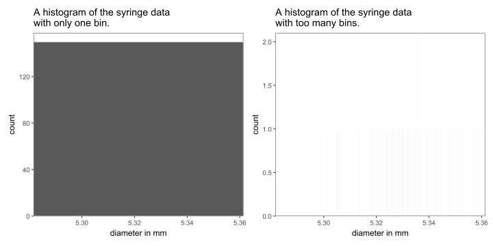
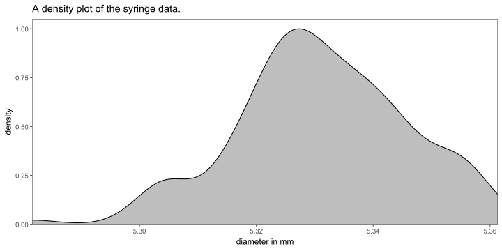
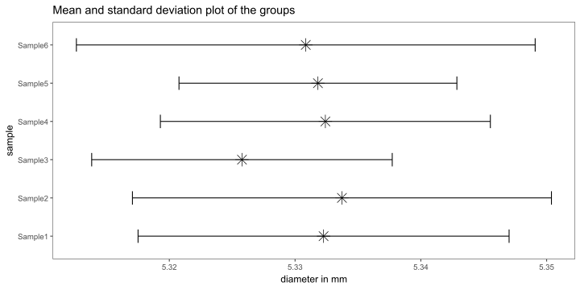
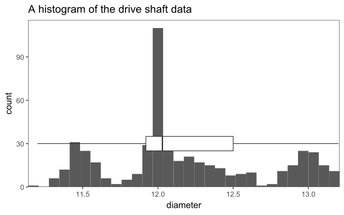

Basic Concepts

The necessary statistical ingredients.
Probability
Overview
Probability theory is a fundamental concept in the field of statistics, serving as the foundation upon which many statistical methods and models are built.
What is Probability?
Probability is a mathematical concept that quantifies the uncertainty or randomness of events. It provides a way to measure the likelihood of different outcomes occurring in a given situation. In essence, probability is a numerical representation of our uncertainty.
Basic Probability Terminology
Experiment: An experiment is any process or procedure that results in an outcome. For example, rolling a fair six-sided die is an experiment.
Outcome: An outcome is a possible result of an experiment. When rolling a die, the outcomes are the numbers 1 through 6.
Sample Space (S): The sample space is the set of all possible outcomes of an experiment. For a fair six-sided die, the sample space is \(\{1, 2, 3, 4, 5, 6\}\).
Event (E): An event is a specific subset of the sample space. It represents a particular set of outcomes that we are interested in. For instance, “rolling an even number” is an event for a six-sided die, which includes outcomes \(\{2, 4, 6\}\).
Probability Notation
In probability theory, we use notation to represent various concepts:
- P(E): Probability of event E occurring.
- P(A and B): Probability of both events A and B occurring.
- P(A or B): Probability of either event A or event B occurring.
- P(E’): Probability of the complement of event E, which is the probability of E not occurring.
The Fundamental Principles of Probability
There are two fundamental principles of probability:
- The Addition Rule: It states that the probability of either event A or event B occurring is given by the sum of their individual probabilities, provided that the events are mutually exclusive (i.e., they cannot both occur simultaneously).
\[\begin{align} P(A \; or \; B) = P(A) + P(B) \end{align}\]
- The Multiplication Rule: It states that the probability of both event A and event B occurring is the product of their individual probabilities, provided that the events are independent (i.e., the occurrence of one event does not affect the occurrence of the other).
\[\begin{align} P(A \; and\;B) = P(A) * P(B) \end{align}\]
Example: Rolling a Fair Six-Sided Die
Figure 1: This example’s sample space, as well as event A and event B.
Probability in action - The Galton Board
Figure 2: A Galton board in action.
Statistics and Probabbility
What is the probability for a ball to land in one of the bin?
Define the problem
- The board has \(n\) rows of pegs (columns)
- Each ball has an equal probability of moving left or right (assuming no bias)
- The number of rightward moves determines the final position in the bins
Formulate the Problem
- ball posistion depends on the number of rightwards moves \(k\)
- bins are indexed from \(0\) to \(n\) (\(k = 0 \rightarrow \text{all left}; k = n \rightarrow \text{all right}\))
for \(n = 4\) bins there are \(4! = 24\) ways for the ball to choose
What is the probability for a ball to “choose” a bin?
The probability for a specific sequence
Suppose we have \(n = 6\) bins. What is the probability for this sequence:
\[RRLLRL\]
\[P(RRLLRL) = \frac{1}{2}\cdot\frac{1}{2}\cdot\frac{1}{2}\cdot\frac{1}{2}\cdot\frac{1}{2}\cdot\frac{1}{2} = \left( \frac{1}{2} \right)^n\]
Is it different for another sequence?
Bins and Sequence
Is it sure, that every ball that follow a specific sequence lands in it’s own bin?
Of course not.
How is that probability calculated?
Generalizing to \(k\) right moves
Calculate the probability of exactly \(k = 3\) right moves in \(n = 6\)
How many possibilities are there in total?
\(6! = 6 \times 5\times 4 \times 3 \times 2 \times 1 = 720\)
The factorial takes ALL sequences into account, but does it matter?
We do not care for the order in which the turns are taken!
How do we correct for that?
Correction for order
We correct for \(k! = 3 \times 2 \times 1 = 6\), the number of ways to arrange the \(k\) chosen elements among themselves.
\[\frac{n!}{k!} = \frac{720}{6} = 120\]
Are we finished?
Correction for Unselected Elements
\((n-k)\) elements are not chosen, so we divide by another factorial, to correct fo the NOT chosen ones.
\[(n-k)! = (6-3)! = 3! = 6\]
Binomial Coefficient
\[\frac{n!}{k!(n-k)!} = \frac{720}{6\times6} = 20\]
This is called the *Binomial Coefficient and it is written
\[\binom{n}{k}\]
So, the number of ways to choose \(3\) elements out of \(6\) is \(20\).
Probability??
Now we know how many ways are there to choose, but in order to cacluclate a probability we still need to multiply this with the probability for each sequence
\[P(k) = \binom{n}{k}\cdot{\frac{1}{2}}^n\]
Detailed Calculation
| \(k\) | \(n!\) | \(k!\) | \((n-k)!\) | \(\binom{n}{k} = \binom{6}{k}\) | \(P(k) = \binom{6}{k}\cdot{\frac{1}{2}}^{n=6}\) |
|---|---|---|---|---|---|
| \(0\) | \(720\) | \(1\) | \((6-0)! = 6! = 720\) | \(\frac{720}{1 \cdot 720} = 1\) | \(P(0) = 1 \cdot \frac{1}{64} = 0.015624\) |
| \(1\) | |||||
| \(2\) | |||||
| \(3\) | |||||
| \(4\) | |||||
| \(5\) | |||||
| \(6\) |
| \(k\) | \(n!\) | \(k!\) | \((n-k)!\) | \(\binom{n}{k} = \binom{6}{k}\) | \(P(k) = \binom{6}{k}\cdot{\frac{1}{2}}^{n=6}\) |
|---|---|---|---|---|---|
| \(0\) | \(720\) | \(1\) | \((6-0)! = 6! = 720\) | \(\frac{720}{1 \cdot 720} = 1\) | \(P(0) = 1 \cdot \frac{1}{64} = 0.015624\) |
| \(1\) | \(720\) | \(1\) | \((6-1)! = 5! = 120\) | \(\frac{720}{1 \cdot 120} = 6\) | \(P(1) = 6 \cdot \frac{1}{64} = 0.093750\) |
| \(2\) | \(720\) | \(2\) | \((6-2)! = 4! = 24\) | \(\frac{720}{2 \cdot 24} = 15\) | \(P(2) = 15 \cdot \frac{1}{64} = 0.234375\) |
| \(3\) | \(720\) | \(6\) | \((6-3)! = 3! = 6\) | \(\frac{720}{6 \cdot 6} = 20\) | \(P(3) = 20 \cdot \frac{1}{64} = 0.312500\) |
| \(4\) | \(720\) | \(24\) | \((6-4)! = 2! = 2\) | \(\frac{720}{24 \cdot 2} = 15\) | \(P(2) = 15 \cdot \frac{1}{64} = 0.234375\) |
| \(5\) | \(720\) | \(120\) | \((6-5)! = 1! = 1\) | \(\frac{720}{120 \cdot 1} = 6\) | \(P(5) = 6 \cdot \frac{1}{64} = 0.093750\) |
| \(6\) | \(720\) | \(720\) | \((6-6)! = 0! = 1\) | \(\frac{720}{720 \cdot 1} = 1\) | \(P(6) = 1 \cdot \frac{1}{64} = 0.015624\) |
Graphical representation
Population

An example for a population.
Sample

A sample drawn from the population.
Descriptive Statistics
Histogram
Figure 3: An example for descriptive statistics (histogramm)
Bad histograms
Figure 4: A bad example for histograms.
Density plot
Figure 5: An example for a density plot for the syringe data (barrel diameter).
Boxplot
Figure 6: A boxplot of the same syringe data combined with the according histogram.
Average, Standard deviation and Range
Figure 7: A histogram of the syringe data with mean, standard deviation and range.
Visualizing Groups
Boxplots
Figure 8: Boxplots of the syringe data with the samples as groups.
Mean and standard deviation plots
Figure 9: Mean and standard deviation plots of the groups in the dataset.
Half-half plots
Figure 10: Half-half plots that incooperate different types of plots
Ridgeline plots
Figure 11: Ridgeline plots for distributions within groups.
The drive shaft exercise
Introduction

Figure 12: The drive shaft specification.
Visualizing all the Data


Visualizing groups within the data
Prof. Dr. Tim Weber